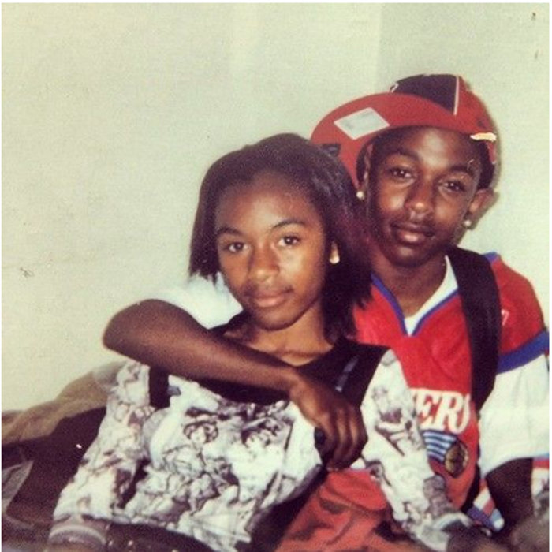

En 2004, a la edad de 16 años, Lamar lanzó su primer proyecto de larga duración, un mixtape titulado Youngest Head Negro in Charge (en español El Jefe Negro Más Joven a Cargo), bajo el seudónimo de K-Dot.13 El mixtape obtuvo reconocimiento local para Lamar, lo que le llevó a ser firmado por la compañía discográfica independiente Top Dawg Entertainment.14 Con ellos empezó a grabar nuevo material discográfico y por consiguiente lanzó un mixtape de 26 canciones en 2005, llamado Training Day.15

|